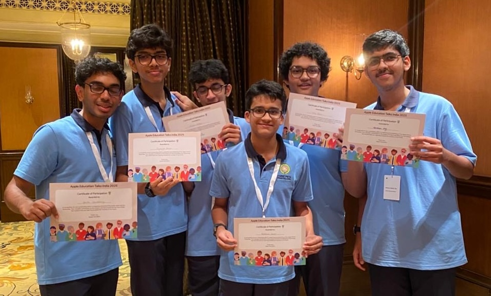

About the Council
Welcome to the Student Technology Council of Oberoi International School! We are a vibrant group of tech enthusiasts dedicated to fostering innovation, creativity, and collaboration among students. Our council organizes workshops, hackathons, and events to inspire the next generation of tech leaders. Join us in exploring the exciting world of technology!

Our Mission
Our mission is to empower students with cutting-edge technology skills, promote digital literacy, and build a supportive community where ideas thrive. Through hands-on projects and events, we aim to bridge the gap between education and real-world tech applications, ensuring every student feels included and inspired.
